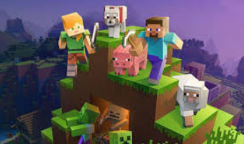
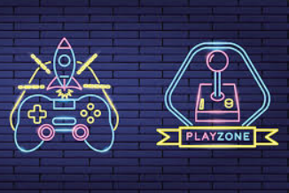

videojuegos que requieren una conexión a internet para funcionar, permitiendo a los jugadores interactuar, competir o cooperar en tiempo real con otras personas desde distintas ubicaciones
Inicio

Los videojuegos online son aquellos que se juegan a través de Internet, permitiendo interactuar con personas de todo el mundo en tiempo real . Este sector es inmenso y se divide principalmente por la forma en que accedes a ellos y su género..
¿Qué es?

Características

- Gráficos pixelados
- Sonido 8-bit
- Jugabilidad simple pero desafiante
- Controles básicos
Ejemplos

Los juegos online permiten la interacción en tiempo real con otros usuarios a través de internet. Ejemplos populares incluyen Battle Royales como Fortnite y PUBG, MOBAs como League of Legends, el shooter táctico Valorant, el RPG Genshin Impact, y juegos de navegador como Parchis Star o UNO.
Galería

incluye títulos multijugador competitivos y de acción que mantienen a los jugadores regresando años después, a menudo destacando géneros como Battle Royale.
Opinión

son herramientas potentes de socialización y desarrollo cognitivo (atención, trabajo en equipo), pero conllevan riesgos significativos como adicción, ciberacoso y exposición a contenido inapropiado.